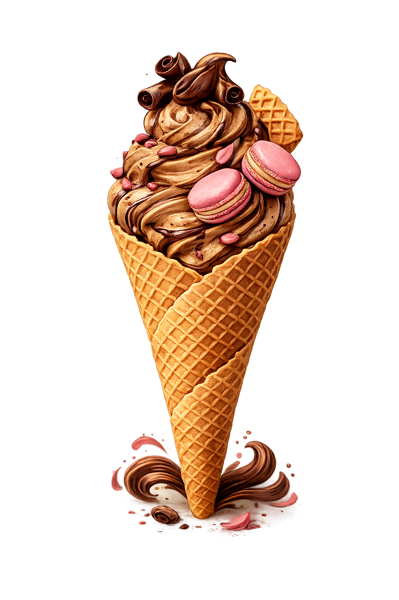

Tradizione italiana in ogni cucchiaio

Mocha é a combinação perfeita entre o café intenso e o chocolate cremoso. Um sabor que nasceu no porto de Mocha, no Iêmen, famoso pelo seu café de qualidade excepcional.
Cada pote de Gelato Mocha é feito à mão, com ingredientes frescos e selecionados. Sem conservantes, sem atalhos — só o sabor verdadeiro do gelato artesanal italiano, preparado com amor e dedicação do início ao fim.
"Feito à mão, saboreado com o coração."